ABAQUS_Composite失效和损伤建模
laminate 的basic failure mode分为 + failure in ply + matrix failure + fiber failure + Delamination between plies

Ply failure和膜应力/弯曲应力关,取决于加载和纤维取向.而Delamination和横向剪切应力有关.一般来说,在疲劳和静态超载下,Delamination更加重要.层间分离的分析可以借助==cohesive 单元==或==VCCT==来模拟.
Failure due to delamination is more insidious, as it is less predictable than ply failure, but ultimately, the laminate needs to be designed not to fail.

1. 定义失效准则(ABAQUS/CAE)

ABAQUS 本身支持的failure theory有: + Stress-Based + MaxStress theory + Tsai-Hill theory + Tsai-Wu theory + Azzi-Tsai-Hill theory + Strain-Based + Maximum strain theory + LaRC05失效准则(较新版本中还内置)
如下图,对于StressBsaed 的失效准则.需要在GUI中定义:1)4个纤维和基体的拉伸/压缩应力强度极限Xt,Xc,Yt,Yc【F/N^2】.2)面内剪切强度极限S.3)Tsai-Wu的比例系数,\(F_{12}\) .4)双轴应力极限Stress Limit,这个可以不设置.
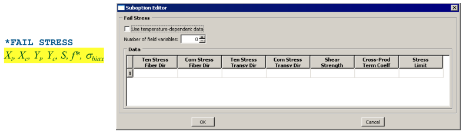
同样的,StrainBsed的失效准则需要定义:纤维和基体的拉伸/压缩应变极限(4个参数),以及面内剪切应变极限S
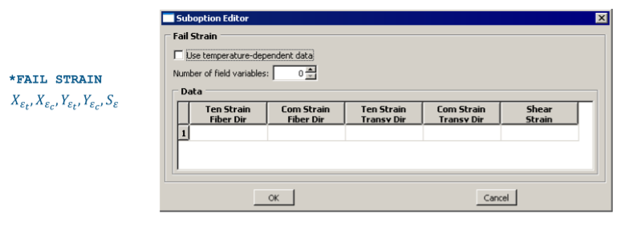
常用失效理论介绍
Maximum stress theory
这是最简单的实效模型,各个应力分量之间不耦合,因此==精度有限==.公式如下:
\(I_{F}>=0,则失效发生\)
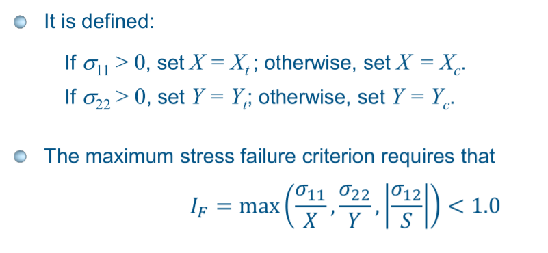
Tsai-Hill theory
这是Tsai在1968年提出的,广泛用作复合材料单层失效评估的简单失效模型.他是Hill's 各向异性塑性模型的扩展.

对于给定的剪切应力\(\sigma_{12}\),可以给出失效包络线:

Tsai-Wu theory
这个理论和Tsai-Hill的不同之处在于:引入了比例因子\(F_{12}\),更加平滑.\(F_{12}\)在abaqus中由\(f^{*}或者\sigma_{biax}\)计算得出.


F12=0时,Tsai-Wu的失效包络线为:

Azzi-Tsai-Hill theory
这个理论和Tsai-Hill很相似,不同之处是:

对比他们的失效包络线:

Maximum strain failure theory
这也是很简单的实效模型,实验对比发现,在一般的应变状态下,准确性还不如maxStress theory.

2. 在后处理中输出Failue Index

在场输出/历史输出中定义有关的Output Vars:

3.使用LARC05作为失效准则
LaRC05不仅可以作为失效判断的准则,也可以作为材料损伤演化的起始准则.
LARC05是基于内置子程序UVARM的损伤评估准则(Damage evaluation criterion),材料名==必须以ABQ_LARC05_DMGCRT为开头==,才能调用内置LARC05
larc05的失效模式如下:

相关论文:Pinho et al., "Material and structural response of polymer-matrix fibre-reinforced composites", Journal of Composite Materials, 46 (19-20), 2012, pp. 2313-2341;
在abaqus的官方社区的==Knowledge Base Article QA00000046225==也可了解更多信息
LARC05在后处理中支持输出:

LARC05一共需要定义15个材料变量:

下面是定义LARC05并调用的一个例子:
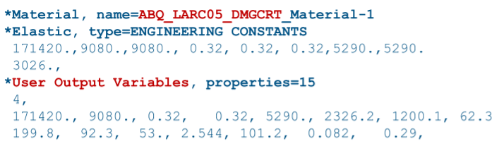
4. ABAQUS对Fiber-Reinforced Composites渐进损伤建模
abaqus 具有建模渐进损伤和失效的通用能力.材料失效是指由于材料刚度的逐渐退化而导致的承载能力的完全丧失.刚度退化的建模依据是损伤力学.
在不使用子程序情况下,abaqus的复材渐进损伤建模本身只支持==带有平面应力公式的单元==,包括:plane stress element,shell element,continuum shell element and membrane element.
支持的损伤模式有:
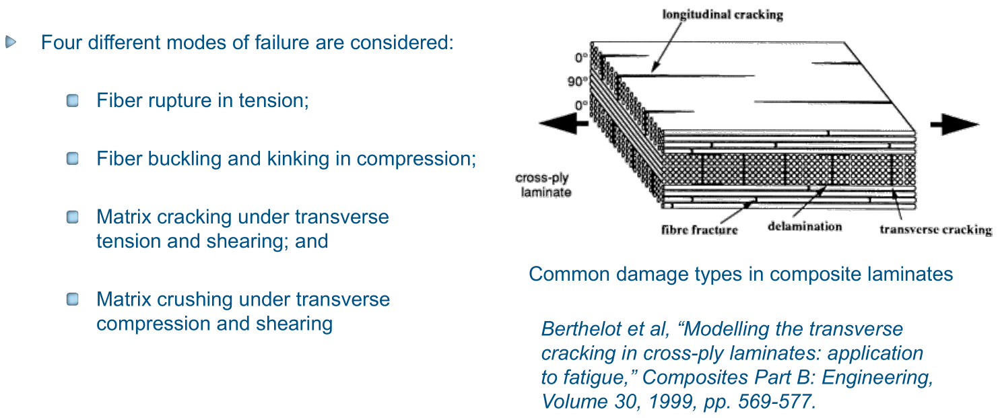
论文链接:Berthelot et al, "Modelling the transverse cracking in cross-ply laminates: application to fatigue," Composites Part B: Engineering, Volume 30, 1999, pp. 569-577.
带有损伤演化的材料定义
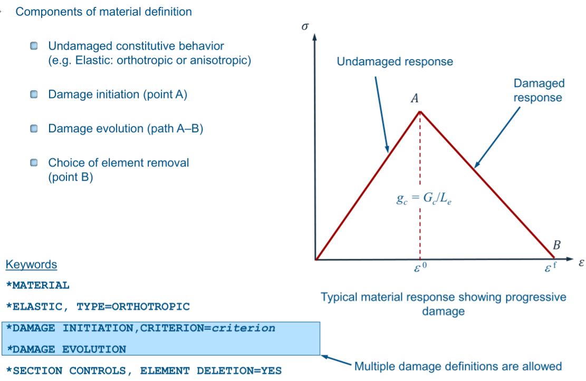
损伤起始定义
damage initiation定义了刚度退化的起始点;fiber reinforced composites的内置损伤起始准则是2DHashin 准则.此外,子程序UDMGINI也可用于定义起始准则(根据abaqus2020文档,该子程序现在只支持enriched element).
起始准则实际上不会导致损伤,除非损伤演化也被指定,用于评估当前变形状态的严重程度很有用
相关的Output Vars:
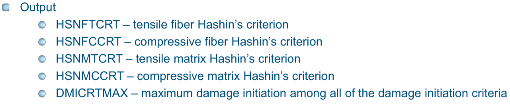
使用内置的Hashin损伤起始准则
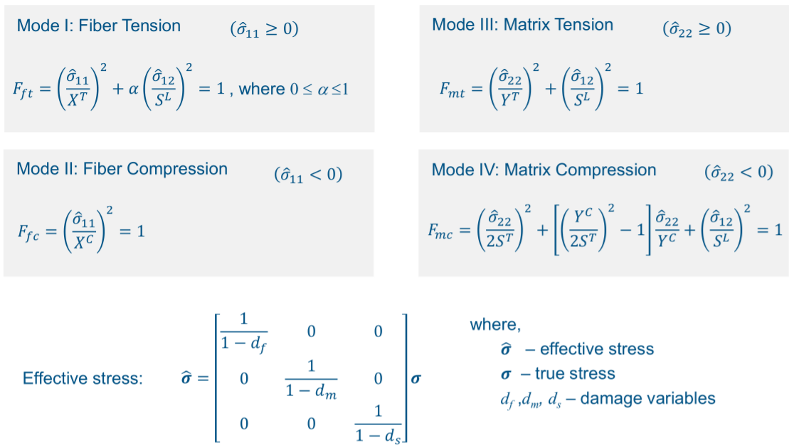
在CAE中定义Hashin 起始准则:
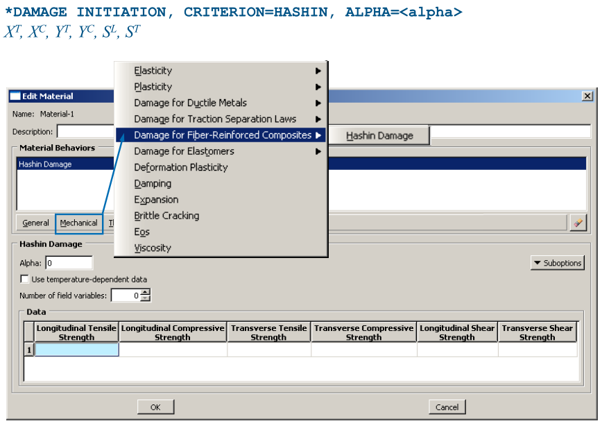
使用UDMGINI子程序定义损伤起始
UDMGINI只支持enriched element,比如XFEM.关键字如下:
除了自己编写损伤起始,abaqus也内置了一个LARC05的UDMGINI子程序.如果要调用他,材料名称必须以 ABQ_LARC05_DMGINI开头.
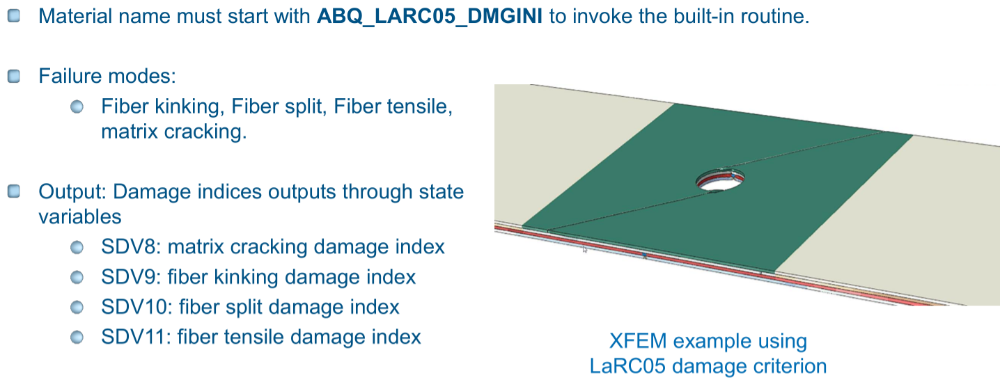
For more information see:Knowledge Base Article QA00000046225
损伤演化定义
损伤演化:定义损伤发生后材料刚度软化的速率
内置的Hashin损伤演化公式为:
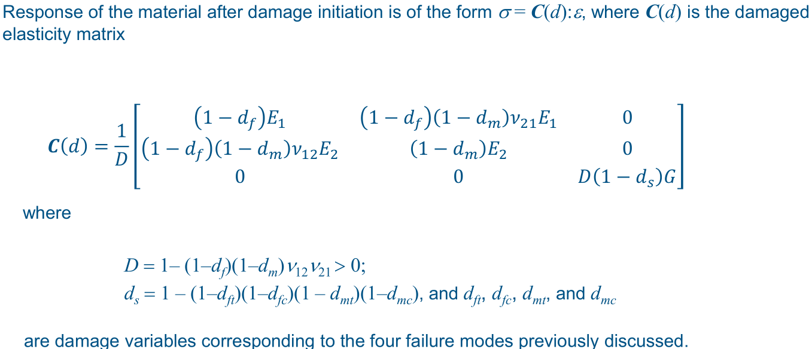
这个演化规则是基于能量耗散的,假定材料软化为线性(based on the work of C. Davila and P. Camanho related to cohesive elements)
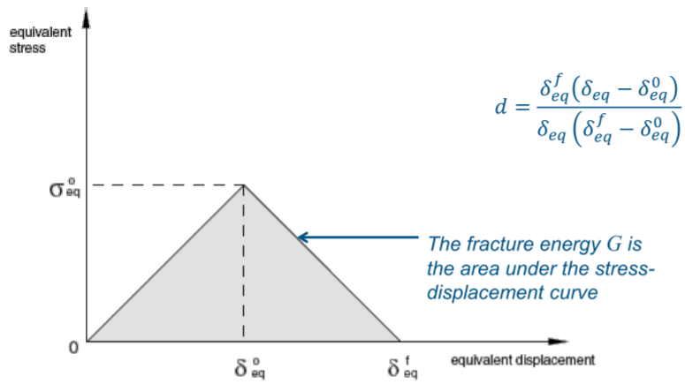
在CAE中输入参数:
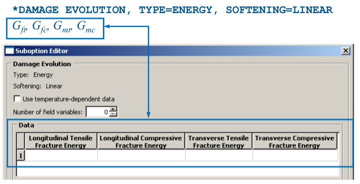
在场/历史输出中可以输出以下变量:
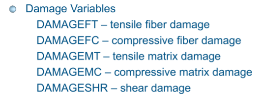
最大退化值和单元删除
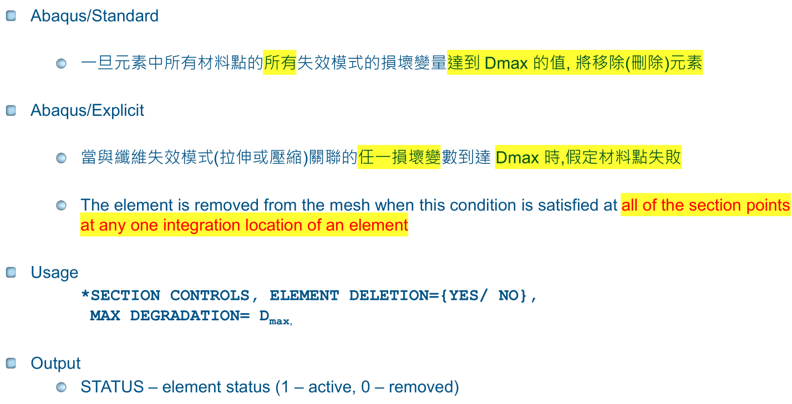
使用粘性正则化提高解的收敛性
剛度退化和材料軟化導致收斂問題.粘性正则化有利于解的收敛,在abaqus可以给每个损伤模式定义一个粘性损伤变量
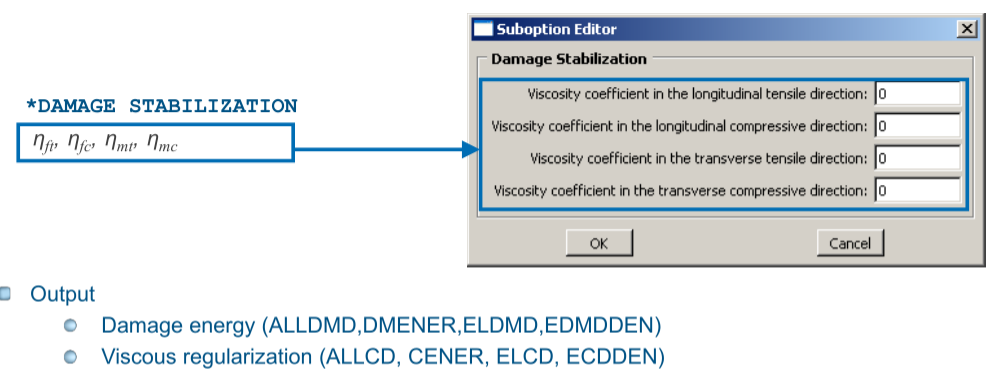
使用黏度參數小值的粘度(與特徵時間增量相比)有助於提高軟化機制中分析的收斂率,而不會顯著影響結果
在Abaqus/Explicit, time-domain linear viscoelasticity可以和内置的2DHashin损伤失效联合使用.
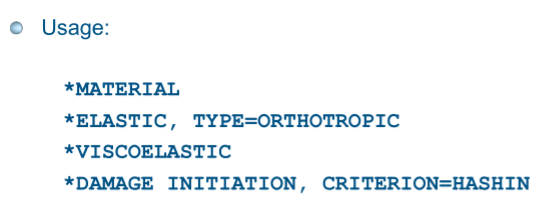
其他输出变量
- Section Failure Output (SFAILRATIO)
whole element Output;Ratio of number of failed plies to the total number of plies, \(SFAILRATIO=NumFailPlies/TotalNumLayers\);value between 0~1;
Only Abaqus/Explicit
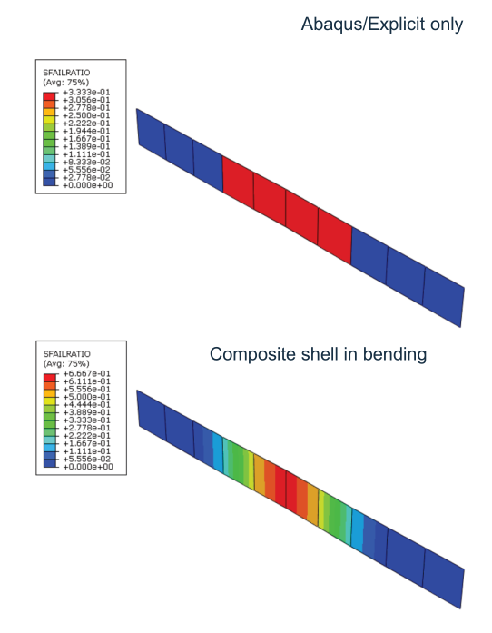
- Material point status (STATUSMP)
- Whole element output (STATUS)
- Section failure ratio (SFAILRATIO)
这三个可以一起使用输出.
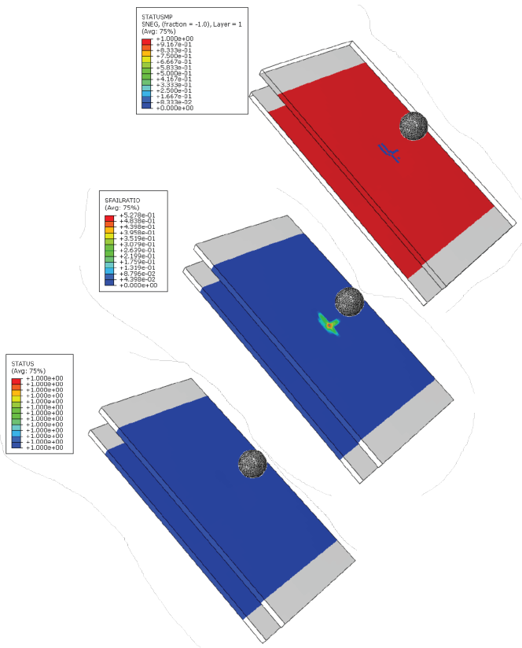
完毕,谢谢.